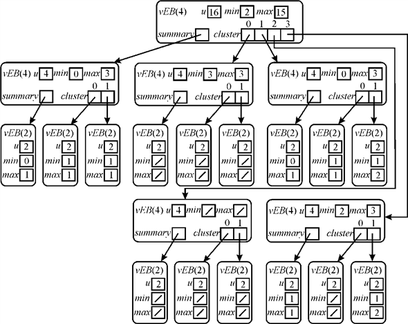
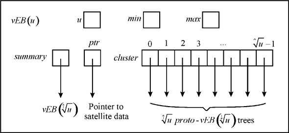

vEB TREE with Duplicate Keys
The vEB-PROTO structure (refer to the section 20.2 of the book)
is used as the base for the actual implementation of the vEB tree.
vEB tree is intended to achieve the running time of  . The
vEB-PROTO falls minutely short while doing this. The reason is the
excess of recursion in the operations. Recursion takes long enough
and the running time of the algorithms can be minimized to only a
certain limit.
. The
vEB-PROTO falls minutely short while doing this. The reason is the
excess of recursion in the operations. Recursion takes long enough
and the running time of the algorithms can be minimized to only a
certain limit.
The approach used in designing the real vEB tree is that if a few things can be kept pre-calculated. The best thing to do would be find out the min and max element of the structure in advance.
Now, it is already known that the leaves of the vEB tree have two elements only. So if min and max attributes are used they can represent the values easily and if any change in the values is to be performed, that can be done in the constant time as the min and max values are already known.
vEB tree is a minor modification in the vEB-PROTO structure in order to make it achieve the desired running time. The structure of the vEB tree node looks like the one shown below:
Change the Van Emde Boas Tree to support duplicate keys: The Van Emde Boas tree does not support the duplicate keys. The reason is the storage structure of the tree. The tree stores a bit array that could contain only a 1 or 0. The keys are not physically stored in the tree rather the array indexes are considered to be the value of the key. Wherever the key is present, the related index is set to 1. If the key is not present the index is left 0.
In order to make the tree support the duplicate keys, the change in the storage structure of the tree would be required. The reason is that binary value can only indicate the presence or absence of the data. It cannot give any clue about the duplicate data.The changes in the storage structure of the bit array can be performed as specified ahead. To do this, one fundamental change must be done in the tree structure.
It is already known that a bit array has not to be maintained in the vEB tree. Rather the leaves hold to attributes that are min and max. Since the leaf has at most two elements so the values are represented using these two attributes only. So, the change is to make the min and max elements support the integer values.
For duplication, an integer can be maintained. Initially all the indexes would be set to 0. Now, whenever the key is encountered, the related attribute of the node would be incremented by 1. That means if the value is in the min attribute the change in that should be committed or if that is in the max attribute, the max should be updated. To change the structure the elements min and max must be defined appropriately to make them support the integer values.
Once this is done, the keys can be represented appropriately. For a given index, if the value is not present, simply set it to 0. If the value is there, then set the value to 1. Now, when the value is repeated the min or max at the corresponding index should be increased by 1 every time the value is repeated. This update depends on whether the element is min element or max element in that leaf.
Now, the summary can be set according to this change. In normal scenarios, the summary is set by checking for the presence of a zero or nonzero element in the min and max attributes. Summary should now not check if there is a 1 or 0 in the min and max attributes. Rather it should be checked if there is a zero or nonzero value in the respective attributes.
For example: a vEB tree with the values 2, 3, 4, 5, 7, 7, 14, 15, 15 would be as below:

Now, it can be seen that the values 7 and 15 are represented by showing the max of related node with an integer 2 because both of the values are being repeated 2 times. This way the vEB tree can be modified to support the duplicate keys.
vEB Tree with Satellite Data
The vEB-PROTO structure (refer to the section 20.2 of the book)
is used as the base for the actual implementation of the vEB tree.
vEB tree is intended to achieve the running time of . The
vEB-PROTO falls minutely short while doing this. The reason is the
excess of recursion in the operations. Recursion takes long enough
and the running time of the algorithms can be minimized to only a
certain limit.
The approach used in designing the real vEB tree is that if a few things can be kept pre-calculated. The best thing to do would be find out the min and max element of the structure in advance. Now, it is already known that the leaves of the vEB tree have two elements only. So if min and max attributes are used they can represent the values easily and if any change in the values is to be performed, that can be done in the constant time as the min and max values are already known.
vEB tree is a minor modification in the vEB-PROTO structure in order to make it achieve the desired running time. The structure of the vEB tree node looks like the one shown below:
Satellite Data: Satellite data, while referenced with respect to the vEB tree, is all of the data that is in the node else than the key. This might be a pointer, any integer or other type data. This can be of primary or a secondary type. Whenever the data has to be fetched, the key is used to find the data.
In general scenarios, any satellite data attached with a key is always kept in the same node as the key. Storing it in the node in the case of an efficient tree structure vEB tree should be done in such a way that the modification does not affect the rest of the structure.
Modification in data structure: There might be several approaches that can be used to store the satellite data in the vEB tree. The selection of approach depends upon the need in terms of execution time and the space availability. Below are illustrated a few approaches that can be used to store the satellite data along with the possible advantages and the disadvantages of each if there are any.
Inclusion of pointer: To modify the vEBtree structure to support satellite data, configure it so that it holds a pointer to the satellite that has to be stored. The pointer can be defined according to the data that is being stored.
This would not make a great impact on the size of the tree and would support the satellite data as well. The operations on the PROTO-vEB structure can be performed by taking the reference of the Keys. This way it could be a good deal to store the satellite data in the VEB tree.
The structure would look like the one below:

In the above diagram, the pointer ptr holds the pointer to the satellite data. This can be set to NULL if there is no satellite data available. The advantage of using a pointer would be that it would not take a great amount of space.
Satellite Data in Node itself: Other way of modification is to save all the data in the structure nodes. This would make the access of the data faster because the data has not to be searched for in various disk locations. This approach however might be less efficient and more space consuming.
Ordered pair approach: One more and probably the most appropriate approach to do this is a minor modification in the first approach. In this entire data is treated as the key value pair. The keys are the keys stored in the tree itself and the value is the entire satellite data that is associated with the key. The keys are stored in the ascending order and the associated satellite data can be gotten by searching the related key in the pair that is stored on the disk. The ascending order of the keys would preserve the basic structure of the vEB tree that has the keys in the ascending order.
For this we would store matches as ordered pairs with value as the key to be inserted in van emde boas tree and value we would insert as satellite data. With the following values there would be an operation of the form.With the above value consideration value and value can be obtained as:
Value
Here, is a dummy
value. The operation provides a
match with
largest in .
.
Inan order which supports keys with satellite data the critical matches in ascending order of value and value will be in descending order to support the space complexity for keys.
This approach can be adopted easily and the modified data structure would be able to support all the operations that are supported by the normal vEB tree. The structure of the node in this approach might look like below:
struct satellite
{
int p;
float q;
satellite *pair_ptr;
}
So, the modification in the data structure would allow the data to be stored in the form of the key value pair. Keys would be the data stored in the tree itself and the data would be associated with the keys nonetheless would be stored somewhere else in the memory. The keys would essentially be stored in the ascending order.
van EMDE BOAS Tree
The vEB-PROTO structure (refer to the section 20.2 of the book)
is used as the base for the actual implementation of the vEB tree.
vEB tree is intended to achieve the running time of . The
vEB-PROTO falls minutely short while doing this. The reason is the
excess of recursion in the operations. Recursion takes long enough
and the running time of the algorithms can be minimized to only a
certain limit.
The approach used in designing the real vEB tree is that if a few things can be kept pre-calculated. The best thing to do would be find out the min and max element of the structure in advance. Now, it is already known that the leaves of the vEB tree have two elements only. So if min and max attributes are used they can represent the values easily and if any change in the values is to be performed, that can be done in the constant time as the min and max values are already known.
vEB tree is a minor modification in the vEB-PROTO structure in order to make it achieve the desired running time. The structure of the vEB tree node looks like the one shown below:
For vEB tree the size of universe for any integer. Here u can be any exact power of 2. In the diagram.
Other modification is the inclusion of min and max attributes. The attributes min and max hold the minimum and the maximum values in the tree respectively. This helps reduce the recursion and improve the running time of the operations.
Pseudo code to design an empty vEB tree: In the pseudo code, the following has to be coded:
? Variable that stores the size of universefor the tree
? Variable min that would store the minimum variable in the corresponding range
? Variable max that stores the maximum value in the corresponding range
? Pointer summary that stores the details of the descendent nodes
? Array cluster that stores the keys in it.
A pseudo code for a procedure to create an empty Van Emde Boas tree has to be written.
There are essentially two ways to do this:
1. Delete the elements from the existing tree and the tree that is gotten by doing this is the empty vEB tree.
2. Create the New empty vEB tree.
Here is the pseudo code for the first approach:
Pseudo code 1:
CREATE-vEB-TREE(vEB)
1. vEB-TREE-DELETE (vEB, a){Deletea from the tree, gives true on success}
2. if HIGH=NULL then
//if condition to check whether the tree has one element
3. if =MIN
=MIN
//when condition is satisfied make the current value NULL
4. this NULL
NULL
// deleting the structures
5. return true
6. else
7. return false
//search the new minimum and delete it from the tree
8. if=MIN
then
// find the minimum value and assign it to
9. Variable HIGH.FindMin()
// searches the minimum value
10. Variable LOW. Find.FindMin ()
11. MIN joins bits
// continue deleting the minimum
12. MIN
13. return true
Explanation of the procedure: The pseudo code for creating an empty tree is shown above. It is done with the help of delete operation. To perform delete operation, call to vEB-TREE-DELETE (vEB, a) operation is there (Refer to the section 20.3.2 of the textbook for the code to delete the element from the tree). In this call, vEB represents tree and a represents the deleted element. The above operation takes time.
If the value of vEB.min is equal to vEB.max and both are equal to entered element a, then a is the single element which is stored in the tree. Deletion of this element makes the tree empty and the value of vEB.min is set to M and value of vEB.max is set to -1. If the value of x is equal to vEB.min, then find out second smallest value in the tree and assign it to the variabley. Now make the value of y equal to vEB.min. After this, deletion of x is there.
If the value of x is equal to vEB.max, then find out second largest value in the tree and assign it to y. Now make the value of y equal to vEB.max. After this, deletion of x is there. In both the cases given above, the second largest or smallest value can be calculated in the order of.
Now, the second and more precise approach for creating an empty vEB-TREE is as below:
Pseudo code 2:
CREATE-vEB-TREE (vEB, u)
//initialize the tree structure
1.Create Structure vEB.
//initialize the minimum and maximum
2. int min = NIL, max = NIL;
//find the minimum and maximum of the tree
3. vEB.min = min
4. vEB.max = max
//create a pointer summary that holds the information about tree node
5. vEB *summary = NIL;
//Initialize the summary for the tree
6. vEB.summary = summary
//set the universe size
7. vEB.u = u
//create the cluster of the tree
8. Create the cluster of pointers for the tree.
9. return
Explanation of the procedure: First of all the variables for the tree have to be defined. Line 1 defines the basic structure of the tree. Line 2 of the procedure initializes variables for minimum and maximum values in the tree. Line 3 and 4 set the values for minimum and the maximum pointers of the tree.
Line 5 sets the pointer summary to the tree node. Now, in line 7, to make sure that the tree summary holds no information, set it to NIL. Create a cluster of pointers for the tree. Set the universe size of the tree and return the control.
vEB tree is a minor modification in the vEB-PROTO structure in order to make it achieve the desired running time. The structure of the vEB tree node looks like the one shown below:
For vEB tree the size of universe for any integer. Here u can be any exact power of 2. In the diagram;
Other modification is the inclusion of min and max attributes. The attributes min and max hold the minimum and the maximum values in the tree respectively. This helps reduce the recursion and improve the running time of the operations.
vEB Tree Insertion: The insertion in the vEB tree takes place as below: The procedure below checks if the tree is empty. If so, then the element is inserted in the tree and both of the min and max attributes point to the value that is just inserted.
vEB-EMPTY-TREE-INSERT 
1 V.min=
2 V.max=
The procedure to insert the element in a tree is as follows:
vEB–INSERTION (T, x)
//base case the tree is empty
1. ifT.min==NIL
//call the procedure for insertion in the empty tree
2. vEB-EMPTY-TREE-INSERT(T, x)
//check if the element is less than the minimum
3. else if x < T.min
//exchange the element with the minimum
4. Exchange x with T.min
//check if the universe size is greater than 2
5. if T.u > 2
//check for the empty cluster
6. if vEB-TREE-MINIMUM (T.cluster [high(x)]==NIL)
//update the summaryin the tree node
7. vEB-INSERTION(T.summary, high(x))
//insert the element in the empty tree
8. vEB-EMPTY-TREE-INSERT(T.cluster [high(x)],low(x))
//insert in the nonempty tree
9. else vEB-INSERTION(T.cluster[high(x)],low(x))
//check if the element is greater than the current maximum
10. if x>T.max
//update the maximum
11. T.max=x
The procedure works as follows: Line 1 and 2 handle the case where tree is empty. The element will be inserted in the empty tree. Line 3 checks if element is smaller than the current min. If this happens then the min is exchanged with the newly inserted item in line 4. Line 5 check if the universe size is greater than 2. Line 6 checks if the cluster is empty.
If the cluster is empty, the summary of the current node is updated and the next line insertion the element in the empty cluster. If the tree is not empty the element is inserted using a recursive call in the line 9. Line 10 and 11 find out if the inserted element is greater than the current max.
If the element is already present in the tree: Now if the element is already present in the tree, then the recursive call would not be able to find out the appropriate position for the element. The reason is that the element would neither be smaller than the min nor greater than the max. So neither line 3 nor line 10 condition is satisfied. So insertion would not take place. So the procedure is not able to handle the case of duplication properly.
Van Emde Boas Tree DELETION: The procedure below would find the element in the tree and delete it from the tree. This uses the procedure vEB-TREE-MINIMUM and vEB-TREE-MAXIMUM (refer to the section 20.3.2 of the textbook) to find the minimum element in the tree.
vEB-DELETE
// base case. Where tree has only element
1. ifT.min==T.max
//set the min and max elements
2. T.min = NIL
3. T.max = NIL
//check for the base size of universe
4. else if T.u==2
//check if x is 0
5. if x == 0
//update the minimum element
6. T.min=1
7. else T.min=0
//check if the minimum is equal to maximum
8. T.max=T.min
//check if the deleted element is minimum
9. else if x==T.min
//set the first cluster
10. first-cluster=vEB-TREE-MINIMUM (T.summary)
//set x to the minimum value
11. x = index(first-cluster, vEB-TREE-MINIMUM(T.cluster[first-cluster]))
12. T.min=x
//delete x from the tree
13. vEB-DELETE(T.cluster[high(x)].low(x))
//check if the cluster is empty now
14. if vEB-TREE-MINIMUM(T.cluster[high(x)]==NIL)
//delete the cluster
15. vEB-DELETE(T.summary.high(x))
//check if the element is maximum value
16. if(x==T.max)
//find the cluster that has the maximum value
17. summary-max=vEB-TREE-MAXIMUM(T.summary)
//check if the related cluster is empty now
18. if(summary-max==NIL)
//set the elements accordingly
19. T.max=T.min
20. else T.max=index(summary-max, vEB-TREE –
MAXIMUM(T.cluster[summary-max]))
//transfer the maximum to x and delete it
21. else if x=T.max
22. T.max=index(high(x),vEB-TREE-MAXIMUM(T.cluster[high(x)]))
The procedure gets executed as follows: The first three lines check for the base case where the tree has one element. Line 4 is to check the base case for universe size 2. Line 5 to 8 set the value according to that. For any tree that has more than one elementthe remaining code works.
Line 10 to 12 makes the first cluster the one that the element is to be deleted from and assign the value to be deleted to x. After this the value is deleted from x and then it is checked if the cluster is empty now. If it does the cluster is deleted. Now, line 16 checks if the element to be deleted is the maximum. Line 17 sets summary-max to the cluster that has maximum value. Now update the value of max appropriately.
If the element does not exist in the tree: If the element is not present in the tree, recursive call will not be made and the loop iteration will not run. The reason being, the above algorithm of deletion will first try to search the element to be deleted. Even after all the lines of the code have been executed, the procedure would not find the appropriate element to delete. So deletion would fail whatsoever. This way the procedure would complete but no appropriate action would be taken.
To find out if the element to be inserted or deleted is in the tree, a procedure can be run that finds out if the element is in the tree or not. The procedure MEMBER finds out if the element exists in the tree or not. In the case of insertion if the procedure succeeds in finding the value in the tree, the procedure would halt then and there. In the case of deletion if the value is found, the procedure deletes the value; if not, the procedure halts.
In the normal scenario, an element can be searched using the
MEMBER function. But using that would take time. The
same operation can be modified to perform the search in constant
time. To do this, the concept of superimposing the tree should be
used.
Superimposing a tree is a procedure in which a tree of specific degree is built over the vEB tree. The nodes of the superimposed tree hold binary values 0 or 1. The nodes can hold a 1 if and only if any of or all the children of the node have a 1 in it. More precisely, the value of the node is the logical OR of values of the childrenof the node. The idea of superimposing can be applied over here in the tree. One more thing that should be applied is that the height of the superimposed tree should be constant.
A vEB tree can be superimposed over a bit array that would hold
a 1 in each of its indexes. If the universe size for the tree
is ,
the length of the array would be. The values
of the array would be the values in the min and max attributes of
the tree nodes respectively. Whenever the member has to be located
the address of the member can be directly fetched from the array
index and true returned; return false otherwise.
,
the length of the array would be. The values
of the array would be the values in the min and max attributes of
the tree nodes respectively. Whenever the member has to be located
the address of the member can be directly fetched from the array
index and true returned; return false otherwise.
Now, the MEMBER function can be modified as below:
MEMBER
1. if (T[a] == 1)
2. return TRUE
3. else
4. return FALSE
Now, it can be observed that the MEMBER operation takes performs
only one check. It takes the value and the array as argument and
directly accesses the index equal to that value. If that index
holds a 1 then the value is present in the tree and the procedure
would return a 1. If not, the value is not present and the
procedure would return a false. Now, for the running time of the
procedure there is only one condition to be checked and one return
statement is to be executed, the procedure would run in a constant
time, that is .
.
VAN EMDE BOAS TREE
The vEB-PROTO structure (refer to the section 20.2 of the book)
is used as the base for the actual implementation of the vEB tree.
vEB tree is intended to achieve the running time of . The
vEB-PROTO falls minutely short while doing this. The reason is the
excess of recursion in the operations. Recursion takes long enough
and the running time of the algorithms can be minimized to only a
certain limit.
The approach used in designing the real vEB tree is that if a few things can be kept pre-calculated. The best thing to do would be to find out the min and max element of the structure in advance. Now, it is already known that the leaves of the vEB tree have two elements only. So if min and max attributes are used, they can represent the values easily and if any change in the values is to be performed, that can be done in the constant time as the min and max values are already known.
vEB tree is a minor modification in the vEB-PROTO structure in order to make it achieve the desired running time. The structure of the vEB tree node looks like the one shown below:
For vEB tree the size of universe for any integer. Here u can be any exact power of 2. In the diagram
Other modification is the inclusion of min and max attributes. The attributes min and max hold the minimum and the maximum values in the tree respectively. This helps reduce the recursion and improve the running time of the operations. An example of the simple vEB tree can be seen in the figure 20.6 of the text book.
Operation performed on vEB TREE: Following operations are performed on the vEB tree:
1. MINIMUM: Minimum element is the element in the tree that has smallest key value. Since the value of minimum element is stored in the min attribute of the node, the operation is performed in the constant time.
2. MAXIMUM: Maximum element is the element with the largest key value. Since the value of maximum element is stored in the max attribute of the node, the operation is performed in the constant time.
3. MEMBER: The objective of this operation is to find out if the specific element exists in the tree. The operation returns a true if the element exists in the tree; false, otherwise.
4. SUCCESSOR: The operation finds the smallest key that is greater than the current key. The searched key is called the successor of the current key.
5. PREDECESSOR: The operation the largest key that is smaller than the current key. The searched key is called the predecessor of the current key.
6. INSERTION: It is to insert a key or a value in the tree.
7. DELETION: It is to delete a key or a value in the tree.
All of the above discussion is for the tree that has clusters
and the size of universe for each of the cluster is. Now,
consider the structure of the vEB tree is modified so that the
number of cluster for the tree is and the
size of universe for each of clusters is equal to ,where
and the
size of universe for each of clusters is equal to ,where
 is
a constant. For this new structure, there would be certain changes
in the running time of the procedures.
is
a constant. For this new structure, there would be certain changes
in the running time of the procedures.
Here is constructed a vEB tree with  clusters
having universe size. Here ,
is
a constant. Now, the running time of these operations needs to be
found. Measuring down
clusters
having universe size. Here ,
is
a constant. Now, the running time of these operations needs to be
found. Measuring down  by until and
unless its size is 1.
by until and
unless its size is 1.
Now, gives.
Therefore, The number of tree levels is  .
.
The number of levels taken is . Therefore, the running times are, as known that k is a constant greater than 1.
VAN EMDE BOAS Tree
The vEB-PROTO structure is used as the base for the actual
implementation of the vEB tree. vEB tree is intended to achieve the
running time of . The
vEB-PROTO falls minutely short while doing this. The reason is the
excess of recursion in the operations. Recursion takes long enough
and the running time of the algorithms can be minimized to only a
certain limit.
The approach used in designing the real vEB tree is that if a few things can be kept pre-calculated. The best thing to do would be find out the min and max element of the structure in advance. Now, it is already known that the leaves of the vEB tree have two elements only. So if min and max attributes are used they can represent the values easily and if any change in the values is to be performed, that can be done in the constant time as the min and max values are already known.
vEB tree is a minor modification in the vEB-PROTO structure in order to make it achieve the desired running time. The structure of the vEB tree node looks like the one shown below:
For vEB tree the size of universe for any integer. Here u can be any exact power of 2. In the diagram.
Other modification is the inclusion of min and max attributes. The attributes min and max hold the minimum and the maximum values in the tree respectively. This helps reduce the recursion and improve the running time of the operations. An example of the simple vEB tree can be seen in the figure 20.6 of the textbook.
Operations performed on Van Emde Boas TREE:
1. MEMBER: This operation is performed to find if any specific
element exists in the vEB tree. The complexity of performing the
member operation for the vEB-tree is.
2. PREDECESSOR: This operation is performed to find out the key
with the maximum value that is less than the key that the
predecessor is being found for. The complexity of this operation
for the vEB-tree is.
3. SUCCESSOR: The objective of this operation is to find out the
key with the minimum value that is greater than the key that the
successor is being found for. The complexity of the
SUCCESSORoperation is same as it is for the predecessor operation
and that is.
4. INSERT: It is to insert a key or a value in the tree.The
value is inserted in the tree only if that does not exist in the
tree already. The complexity of the operation for vEB tree
is.
5. DELETE: It is to delete a key or a value in the tree. The
value can be deleted from the tree only if that exists in the tree.
Nothing would happen if the value does not exist. The complexity of
the procedure would be.
Finding the small number of operations to achieve the amortized time of each operation is :
Constraint on number of operations on vEB tree:
• Creating an empty a vEB tree of universe size u requires .
• each operation on vEB tree takes
• For small number of operations, . That is, the time required to create empty vEB tree is greater than the time required to perform an operation on the tree.
Thus, the vEB tree is not used when small number of operations is to be performed.
Assume that after n-1 operations, and after nth operation .
Where is the time required to perfume n operations on vEB tree.
Now, it is asked to find the small value for n such that
Suppose,
Thus,
 is
.
is
.
Thus,
Therefore ,to achieve the amortized cost for each operation
in vEB tree is ,
the n value must be minimum .
That is,
.